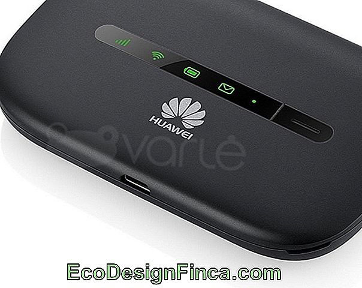
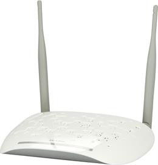

Photo gallery
2020.10.29 08:56







- Maršrutizatoriai
Tipas: Maršrutizatoriai (Routers) Spalva: Balta Maršrutizatorius TP-LINK Extender TL-WA855RE 802.11n, 2.4GHz, 300 Mbit/s, 10/100 - Tinklo įranga internetu: maršrutizatoriai, šakotuvai ir kt ...
Kokybiški, stabilūs ir greiti maršrutizatoriai jūsų namams ar ofisui: Wifi ir 4G modemai, maršrutizatoriai su SIM kortele ir kiti patikimi sprendimai. - - Maršrutizatoriai - Dokų stotis - Baterijos kompiuterinei ...
Maršrutizatoriai nukreipia ir persiunčia informaciją, filtruoja duomenis ir apriboja jų judėjimą, o taip pat perkoduoja informaciją bei apsaugo tinklą. Šie įrenginiai suteikia galimybę vienu metu internetu naudotis keliems kompiuteriams. - Maršrutizatoriai - kainos nuo 6.11 € | Kaina24.lt
Maršrutizatoriai (266) Dokų stotis (10) Baterijos kompiuterinei technikai (145) Krovikliai kompiuterinei technikai (70) Krepšiai nešiojamiesiems kompiuteriams (422) Aušinimo padai (14) Nepertraukiamo maitinimo šaltiniai UPS (168) UPS ir įtampos stabilizatorių priedai (1) Kiti kompiuterio komponentai ir aksesuarai (47) Valymo priemonės (42) - Maršrutizatoriai | Bevielis maršrutizatorius | Routeris ...
Maršrutizatoriai Prekių palyginimas (0) Rūšiuoti pagal: Standartinė Pavadinimas (A - Z) Pavadinimas (Z - A) Kaina (Žema > Aukšta) Kaina (Aukšta > Žema) Įvertinimai (Aukščiausi) Įvertinimai (Žemiausi) Prekės kodas (A - Z) Prekės kodas (Z - A) - Maršrutizatoriai | Routeriai | Wifi
Ne visi maršrutizatoriai, turintys USB prievadą, palaiko dongle. Taip pat patikrinkite, ar dongle yra suderinamas su maršrutizatoriumi. Saugumas. Kaip žinome, skirtingi maršrutizatoriai siūlo skirtingus saugumo protokolus, pavyzdžiui, WEP, WPA ir WPA2. Iš visų tipų saugumo protokolų WPA2 yra laikomas geriausiu, todėl dauguma naujų ... - Maršrutizatoriai, stiprintuvai, modemai, adapteriai | pigu.lt
Wifi maršrutizatoriai, stiprintuvai internetu gera kaina. Interneto modemai, routeriai ir kitos svarbios prekės jūsų namams. Taupykite laiką ir pinigus! - MARŠRUTIZATORIAI - NAMAMS, DARBUI IR ŽAIDIMAMS. ŽEMOS ...
Maršrutizatoriai internetu gali būti užsakomi tikrai labai greitai, tačiau neskubėkite nuspręsdami, kokia pasirinkimo galimybė gali būti pačia palankiausia, ir jei kiltų tam tikrų klausimų, susisiekite su pardavėjais, kurie padės paprasčiau išsirinkti tinkamiausias prekes. - Maršrutizatoriai | Liepa 2020
Pakeitus pavadinimą reikėtų nustatyti ir WiFi slaptažodį. Kai kurie maršrutizatoriai neleidžia naudoti labai lengvai atspėjamų slaptažodžių, todėl gali būti reikalaujama naudoti skaičius, didžiąsias raides ar net specialiuosius simbolius – tai padeda apsisaugoti nuo kai kurių įsilaužėlių. - SKYTECH.LT - kompiuteriai, televizoriai, namų elektronika
Maršrutizatorius arba wi-fi routeris - prietaisas skirtas suteikti interneto prieigą belaidžiu būdu arba per LAN kabelius. Maršrutizatoriai gali būti dvidažniai, palaikyti mobilųjį 4G LTE, 5G internetą, turėti USB prieigą kuri gali suteikti FTP ar nuotolinio disko funkcijas